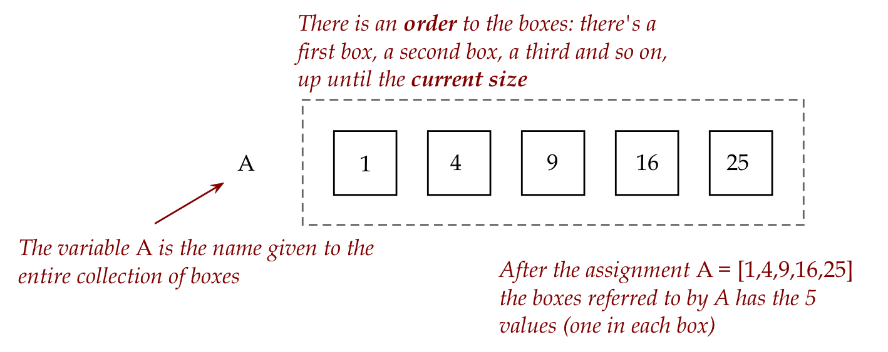
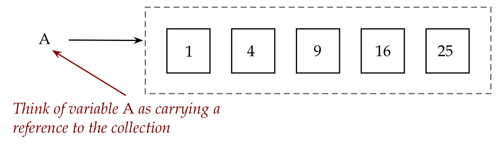
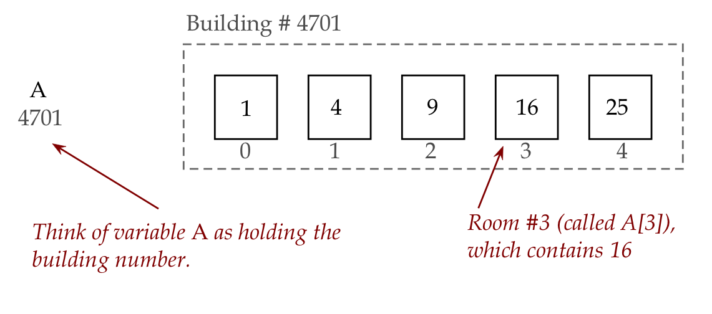

Module 0: A first look at lists
Objectives
By the end of this module you will be able to:
- Understand how a list is different from a variable
- Explore the syntax around using lists in programs
- Use lists in programs to solve problems
- Practice mental execution (tracing) and debugging related to lists
0.0 An example of a list
Consider this program:
# List example:
A = [1, 4, 9, 16, 25]
for i in range(5):
print(A[i])
# In contrast, a plain variable:
k = 100
print(k)
Remember how we think of a variable as a box that stores values?
- This is indeed how we think of the variable
kabove.
- In contrast, a list variable is a single name given to a collection of boxes: 
- The above collection has a current size, in this case 5.
- The values in a list are called elements of the list.
- There is an implied order going from the first to the last element.
- It turns out, we can access individual elements in the list using indices:
- List indices start at 0
- And end at one less than the size.
- Thus, in the above example, the size of the list is 5.
- The indices (positions in the list) are: 0, 1, 2, 3, 4.
- The last valid position (or index), which is 4 here, is one less than the size, 5.
Consider this program:
A = [1, 4, 9, 16, 25]
# Use len to get the current size:
n = len(A)
print('Size of A: ' + str(n))
# Add an element to the list:
A.append(36)
n = len(A)
print('Size of A: ' + str(n))
# Change a particular element:
A[3] = 100
print('The list: ' + str(A))Let’s point out:
Observe how we obtain the current size and add an element:
Next, observe square brackets being used for different purposes:
We could use a variable to access elements, as long as that variable has an integer value that has a valid index, for example:
k = 3 A[k] = 100Remember
len?We had used
lenearlier for the length of strings, as ins = 'hello' print(len(s)) # Prints 5Here,
lenworks to give us the length of a list, as in:A = [1, 4, 9, 16, 25] print(len(A))
For example:
A = [1, 4, 9, 16, 25] i = 3 # i's value 3 is valid for a size 5 list print(A[i]) i = 7 # 7 is not valid print(A[i])In the above example, there is no element
A[7]in a list that only has 5 elements.
0.5 Video
0.1 More list examples
Just as we can add elements to list, so can we remove elements, as in:
A = [64, 9, 25, 81, 49]
print(A)
A.remove(9)
print(A)- The elements in a list do not need to be in sorted order, as the above example shows. They can be in any order, but once in that order, they stay in that order unless we make a change to the elements in the list.
- Although our examples so far have lists of integers like 64, we will later build lists with real numbers and strings.
Consider this example:
# List constructed by typing the elements in:
A = [1, 4, 9, 16, 25]
print(A)
# List built using code to construct elements:
B = [] # An empty list
for i in range(5):
k = (i+1) * (i+1)
B.append(k)
print(B)It is possible to create an empty list and give it a variable name as in:
B = [] # An empty listWe could then add elements by appending.
One can shorten the lines inside the loop:
B = [] # An empty list for i in range(5): B.append( (i+1) * (i+1) )Here, we’ve fed the arithmetic expression
(i+1) * (i+1)directly intoappend, without using a separate variablekto first calculate and then append.
We do not need to traverse in exactly the order of elements in the list:
For example:
A = [15, 25, 35, 45, 55, 65, 75, 85, 95, 105] for i in range(9, 0, -2): print(A[i])Here, we’re starting at the last element, traversing the list from end to beginning in steps of 2.
0.2 A strange thing with lists
Let’s first look at copying between regular variables, as in:
x = 5
y = x # Copy the value in x into y
x = 6 # Change the value in x
print(y) # Does it affect what's in y?Next, consider this:
A = [1, 4, 9, 16, 25]
B = A
A[0] = 49 # Change some value in list A
print(B) # Does it affect what's in list B?Let’s explain:
Clearly something strange is going on with lists.
One way to think of it is to go back to our picture of a list: 
We’ll now sketch out an analogy:
- Think of the list as a building with rooms (the boxes): 
- Then, the list variable A is really something that holds the building address (the building number).
- The rooms in the building are numbered from 0, 1, etc.
- The first room is A[0], the second is A[1] etc.
Now, consider an assignment like:
B = AThen, in the building analogy, what we get is:

This is why, when we change the A list as in
A[0] = 49 # Change some value in list AThen, we are achieving

Nowhere in our code is the building number (4701) explicitly written. Building numbers (they are technically called pointers) are handled by Python, and made invisible to us because we don’t need them.
(Yes, we can print the building number if we wish, but that’s an advanced topic.)
We obviously want to know: is it possible to create a complete copy of A in B? As in:

Because then, if we change A, it does not affect B:
This is what it looks like in code:
A = [1, 4, 9, 16, 25] B = A.copy() A[0] = 49 # Change some value in list A print(B) # Does it affect what's in list B?
So, which (B = A or B = A.copy()) do we use?
- Generally, you should use
B.copy()unless you intentionally want the same “building number”. - In the former case, you have to be careful.
0.3 Different ways of iterating through a list
Consider this example:
A = [1, 3, 5, 7, 9]
total = 0
for i in range(5):
total = total + A[i]
print(total)Now let’s look at two different ways of writing the same loop (we’ll only show the loop part):
The first one:
for i in range(len(A)): total = total + A[i]
Instead of figuring out the length of a list by looking at the list, we can ask Python to compute the length and use that directly:
for i in range(len(A)): total = total + A[i]This way, we don’t need to track the length ourselves (if elements get added or removed).
The second way is even better:
for k in A: total = total + kHere:
Here the iteration is directly over the contents of the list.
The variable k is not an index but takes on the actual values in the list.
With a list like
A = [1, 3, 5, 7, 9] total = 0 for k in A: total = total + kIn the first iteration k is 1, in the second k is 3, in the third k is 5, and so on.
So, naturally, these get added directly into the variable
total.
You can think of the first approach (using an index i and A[i]) as index iteration.
The second (using the value directly), as content iteration.
Which one should one use?
- Prefer to use content-iteration, whenever you can.
- In some cases, however, you’ll find index iteration is useful, especially when you need the position where something occurs in the list.
0.4 Working with multiple lists
Suppose we have two lists of the same length like this:
A = [1, 4, 9, 16, 25]
B = [1, 3, 5, 7, 11]Let’s examine different ways of performing addition on the elements.
First, let’s add up the total of all 10 numbers:
A = [1, 4, 9, 16, 25]
B = [1, 3, 5, 7, 11]
total = 0
for k in A:
total = total + k
for k in B:
total = total + k
print(total)In the above case, we added all the numbers contained in both lists, to get a single number.
Notice how natural it is to use content-iteration.
What if we want a third list whose elements are the additions of corresponding elements from each list?
1 4 9 16 25 1 3 5 7 11 ----------------------- 2 7 14 23 36Here, the last row is a new (third) list.
Let’s write code to perform element-by-element addition:
A = [1, 4, 9, 16, 25]
B = [1, 3, 5, 7, 11]
C = []
for i in range(5):
element_total = A[i] + B[i]
C.append(element_total)
print(C)0.19 Video
0.5 Moving elements around in a list
Consider a list like:
A = [1, 4, 9, 16, 25]Next, suppose we want to swap the elements in the 2nd and 4th positions within the same list (not creating a new list).
That is, we want to write code so that:
A = [1, 4, 9, 16, 25]
# ... code to swap 2nd and 4th elements ...
print(A)
# Should print [1, 16, 9, 4, 25]To achieve that:
A = [1, 4, 9, 16, 25]
temp = A[1]
A[1] = A[3]
A[3] = temp
print(A)0.6 Lists of strings, characters, or real numbers
We have thus far seen lists of integers. One can make a list of other kinds of elements.
For example:
# A list of strings:
A = ['cats', 'and', 'dogs']
s = ''
for w in A:
s += w
print(s)
# A way to extract the characters in a string into a list:
s = 'abcdef'
B = list(s)
print(B)
# Some real numbers:
C = [1.1, 2.22, 3.333, 4.4444]
total = 0
for x in C:
total = total + x
print('Average =', total/4)0.7 A different version of print
Consider these two variations of using print:
x = 2
s = 'eat'
y = 3.141
print('I love ' + str(x) + ' ' + s + ' ' + str(y))
print('I love', x, s, y)The first version above uses string concatenation to send one big string to print:
print( 'I love ' + str(x) + ' ' + s + ' ' + str(y) )In the second version above, strings and variables given to print are separated by commas.
Here, print treats the four things as separate entities:
print('I love', x, s, y)In this case, print automatically inserts a space between the different things (that are separated by commas).
In the second type, there is no need to convert numbers to strings.
0.8 Random selection of elements from a list
It is often useful to be able to pick random elements from a list.
Let’s use this feature first for a single roll of a die, and then two dice:
Since a single die has 6 faces with the numbers 1 through 6, we’ll use a list of the numbers 1 through 6:
die = [1, 2, 3, 4, 5, 6]Our goal is to choose one of these numbers randomly.
Python provides a way to randomly pick (without removing) an element from a list:
die = [1, 2, 3, 4, 5, 6] roll = random.choice(die)Let’s put this together into a program (remembering to import the random package):
import random die = [1, 2, 3, 4, 5, 6] roll = random.choice(die) print(roll)
Next, let’s use this to make a (ridiculously) simple game:
Two players each roll a die N times. The numbers on the rolls are averaged. The player with the higher average wins.
OK, not the most entertaining game, but one for which we can easily write a program (from the point of view of one player):
import random die = [1, 2, 3, 4, 5, 6] num_trials = 10 total = 0 for i in range(num_trials): roll = random.choice(die) print(roll) total += roll print('Average score:', total/num_trials)
0.9 Some math via programming
Let’s start with an example and then use that to delve into a few concepts:
from drawtool import DrawTool
dt = DrawTool()
dt.set_XY_range(0,10, 0,100)
# The blue collection of points:
dt.set_color('b')
x_coords = [0, 1, 2, 3, 4, 5, 6, 7, 8, 9, 10]
y_coords = [3, 5, 7, 9, 11, 13, 15, 17, 19, 21, 23]
dt.draw_curve_as_points(x_coords, y_coords)
# The red collection of points:
dt.set_color('r')
x_coords = [0, 1, 2, 3, 4, 5, 6, 7, 8, 9, 10]
y_coords = [0, 1, 4, 9, 16, 25, 36, 49, 64, 81, 100]
dt.draw_curve_as_points(x_coords, y_coords)
dt.display()Now let’s ask some basic questions:
- What, really, is a graph and what does it mean to plot on a graph?
- What are x,y values and what do they have to with plotting?
- What’s a function and what’s the connection between (f(x)) and points on a graph?
- And what does this have to do with programming?
We’ll address these questions below.
Let’s recall where we started:
- In the beginning, there were integers (whole numbers) like 1, 2, 3, and 42.
- Along with them came real needs like addition, subtraction, multiplication and division.
(Ancient applications: navigation, telling time, accounting/trade). - The integers were not enough because you can perform 3 - 8 and get … what? So came the negative integers like -5.
- Then, because 5/2 is not an integer, more numbers were needed, and hence the real numbers.
- Next came algebra:
- Instead of saying “I can take 12 times 4 and get 48, and then divide by 6, to get twice your original number 4”, we can write: \[ \frac{12x}{6} = 2x \]
- It’s much more compact and precise.
- Next came functions:
- Instead of saying “OK, take your number and multiply it by itself”, it’s much more compact to say: (f(x) = x^2).
- We can think of a function as taking some input (like (x)and “doing something to it” to get an output:
- All of this resulted in significant advances in mathematics.
- Then came Descartes who took this to a whole new level with coordinates.
The idea of coordinates:
Suppose you had a way of linking or associating pairs of numbers:
- For example, suppose 1 is associated with 5
- 2 is associated with 7
- 3 with 9
Suppose we wrote these as: (1,5), (2,7), (3,9) and so on.
Next, draw two perpendicular lines (one horizontal, one vertical) on a page:
And call them the x and y axes respectively.
Now given associations (1,5), (2,7) and (3,9):
- Treat the first number as the distance from the vertical axis.
- Treat the second number as the distance from the horizontal axis.
- This will put us in a unique spot.
- Call that a point.
For example:
That’s all there’s to it. It’s hard to believe that such a simple idea became transformational.
The connection between functions and coordinates:
Suppose you have a function like: (f(x) = 2x + 3)
One way to make sense of a function is to compute lots of examples like:
\[ f({\bf 1}) = 2*{\bf 1} + 3 = 5 \] \[ f({\bf 2}) = 2*{\bf 2} + 3 = 7 \] \[ f({\bf 3}) = 2*{\bf 3} + 3 = 9 \]
- And even \[ f({\bf 3.16}) = 2*{\bf 3.16} + 3 = 9.32 \]
A pair of axes makes it possible to visualize a function directly, initially by plotting some example points:
- Take some x.
- Calculate f(x)
- Then treat x as the first coordinate (distance from y-axis).
- Treat f(x) as the second coordinate (distance from x-axis), and plot.
- For example, when x=2, then we saw that f(2) = 7. So, plot (2, 7).
In general, we want to plot x, f(x) for lots of different possible x values.
Here, f(x) is what we use for the y-coordinate, which is why we sometimes write y = f(x).
When we plot x, f(x) for different x values, we typically pick those x values for our convenience.
For above, we showed how to calculate f(x) = 2x + 3 when x=1, when x=2, when x=3, and so on, perhaps up to when x=10,
(Here, the intended range is close to zero.)But if we need to, we could just as easily calculate f(x) = 2x + 3 when x=0.1, when x=0.2, when x=0.3, and so on up to when x=1.0,
(Here, the intended range is close to zero, between 0 and 1.0)
Let’s put these ideas to use:
Suppose we have two functions f and g
- f(x) = 2x + 3
- g(x) = x^2
Our goal: compare the two functions.
One advantage of programming is that we can write code to perform the action of functions.
For example:
x = 0 for i in range(11): f = 2*x + 3 print('x =', x, ' f(x) =', f) x = x + 1 x = 0 for i in range(11): g = x*x print('x =', x, ' g(x) =', g) x = x + 1
It is far more valuable to visualize, so let’s set about plotting both together:
- To plot, we’ll need to construct the list of x and y coordinates:
from drawtool import DrawTool
dt = DrawTool()
dt.set_XY_range(1,10, 0,100)
x = 0
x_coords = []
y_coords = []
for i in range(11):
x_coords.append(x)
f = 2*x + 3
y_coords.append(f)
x = x + 1
dt.draw_curve_as_lines(x_coords, y_coords)
dt.set_color('r')
# WRITE CODE HERE for the second function
dt.draw_curve_as_lines(x_coords, y_coords)
dt.display()Let’s point out:
0.32 Video
Scale and axes:
You may have noticed that the x-axis above had tick marks going from 0 to 10, while the y-axis went from 0 to 100.
This is an example of a plot that’s NOT drawn to scale.
Let’s draw one to scale to see what it looks like by changing one line, from
dt.set_XY_range(1,10, 0,100)to
dt.set_XY_range(0,100, 0,100)
When to use different scales along the axes:
- Using the same scale, we see the dramatic difference between linear growth (the function (f(x)=2x+3)) and quadratic growth (the function (g(x) = x^2)).
- But at the same time, some features like the point of intersection of the two curves is hard to see.
- We can use different scales when we want to emphasize different aspects.
0.10 Mathematical art
Since we’re on the topic of functions, we cannot resist developing an art project based on it.
Let’s first plot a function from high-school: the sine function
from drawtool import DrawTool
import math
dt = DrawTool()
dt.set_XY_range(0,6.28, -1,1)
n = 100
x_spacing = 6.28/n
x = 0
for i in range(n):
f = math.sin(x)
dt.draw_point(x, f)
x = x + x_spacing
dt.display()Let’s point out:
- First, some code features:
- Next, observe that we plotted points directly inside the loop instead of first building a list of coordinates.
- Doing so is an alternative way of plotting (“plot as you go”), and will let us change the point color.
So, for our art project:
- We’ll draw a background with randomly strewn yellow dots.
- Then, along a sine-curve, we’ll draw small ellipses of different sizes.
0.11 When things go wrong
In each of the exercises below, first try to identify the error just by reading. Then type up the program to confirm, and after that, fix the error.
0.12 Meta
This is the next installment in our series of stepping back from it all and reflecting, with the hope of helping you progress as a learner.
This time our topic is math and math anxiety.
Let’s start by acknowledging a few things:
- Students do in fact have bad experiences learning math.
- For example, if you were unlucky to be ill during the critical period in 4th grade when fractions are covered, that could become a gap that precludes other concepts.
- Or if algebra did not go well, everything that follows in math can lead to cascading difficulties in learning.
- Students learn math differently and their “window of opportunity” may not be aligned with where their school is.
- Thus, for many students, a certain age is not optimal for academic intensity, or issues at home prevent full engagement.
- There are hidden cultural dispositions that can get in the way.
- The most pernicious by far is the notion that some people just aren’t cut out for it. Or you have to have the “math gene”.
- Much of K-12 math is, admittedly, a bit dull.
At the same time, there’s good news:
- Math (and programming) is like any other skill: everyone can acquire it with sufficient practice, but not everyone can reach the level of “world expert”.
- This is true of just about any mental skill: facility with language, playing a musical instrument,
- And, most importantly, anyone can acquire it at any age.
- Can you tell someone it’s too late to learn, say, French?
- Can you tell someone it’s too late to learn, say, French?
- It all depends on shedding the “I’m not cut out for it” disposition and committing to practice.
- There is world of elegance and beauty in math after crossing a threshold of skill level, just as with a musical instrument.
Let’s say a bit more about practice:
- You surely know a musical instrument cannot be learned merely by watching videos or reading about it.
- Proficiency requires regular and intense practice.
- The best part of practice is that, even though progress is not instantaneous, you can see results after a while.
- Another advantage: the nature of practice is that many people give up. So, if you don’t, you are ahead of those that do.
Finally, the connection between programming and math:
- It is true that most people who program do not use math at all. Just ask a web developer.
- But if you add a bit of math, you can do many interesting things in programming, as anyone who deals with data will tell you.
- Some aspects of computer science that have a strong mathematical underpinning are just … a lot of fun!